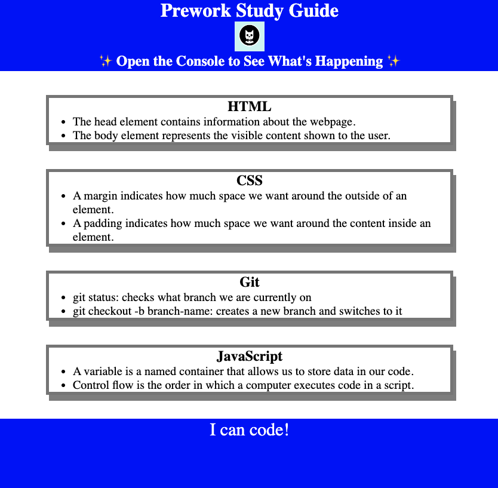

Bachelor’s of Science in Psychology
2020-2022
About Me
My name is Jaclyn! I have 15 years of healthcare experience (in physical therapy). I graduated with honors from Grand Canyon University in 2023 with a Bachelor's of Science in Psychology. Shortly thereafter, I decided to shift gears into the exciting world of web development. I can't wait to see how I can use my new skills to help you!
My Work
Here are some projects that I made in my fullstack coding bootcamp!

Contact Information
Email: jaclynbarcal@gmail.com
Resume
Education
Associate of Applied Science
2008-2010
2008-2010
Experience
January 2018 – March 2023
- Outpatient setting treating patients of all ages
- Assisted in development of TBI treatment division
- Communicated closely with interdisciplinary team (in-house pain management MD, chiropractor,lawyer and care coordinator) in order to provide the best patient care and treatment plan
December 2015- January 2020
- Independent contractor servicing an 85-mile radius
- Created/provided unique, engaging, and effective treatment sessions
- Provided extensive family/caregiver education on fall prevention, transfer techniques, home safety modifications, and training on home exercise program